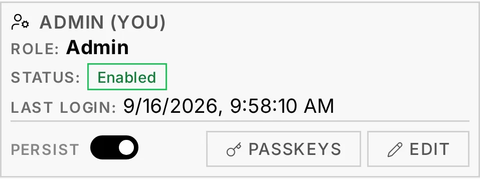
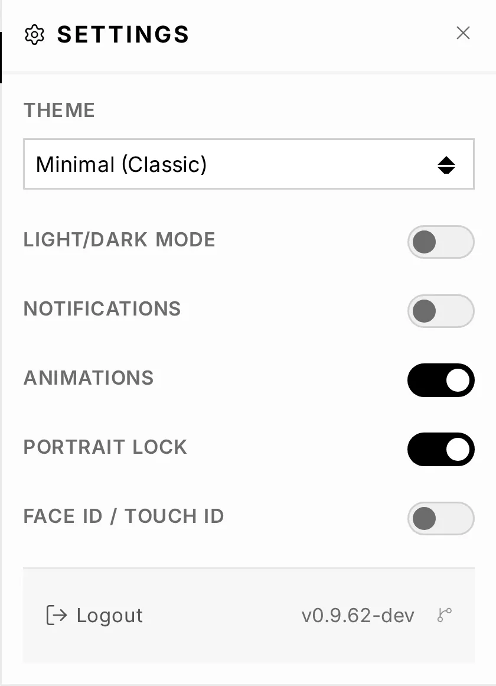
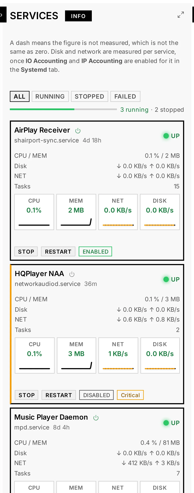
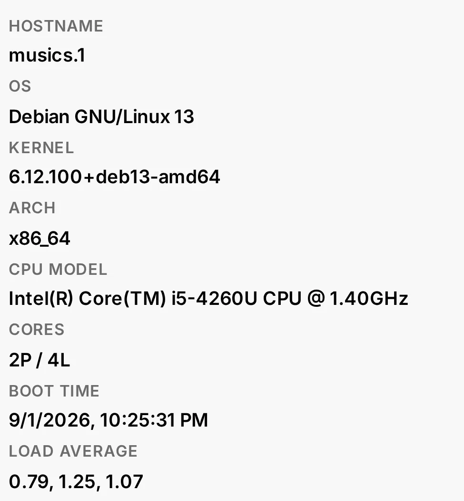
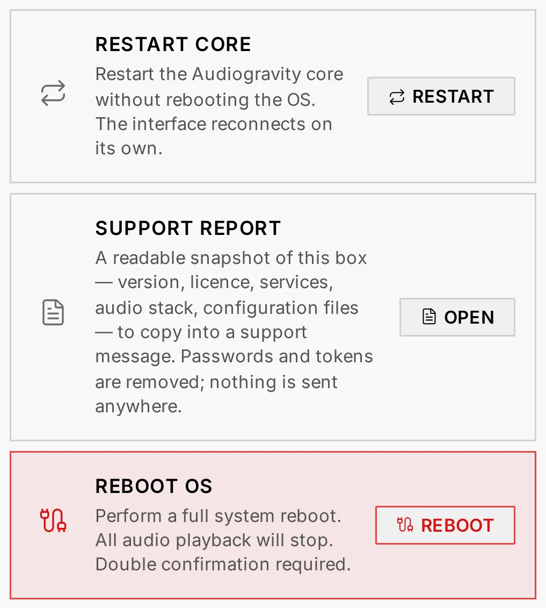
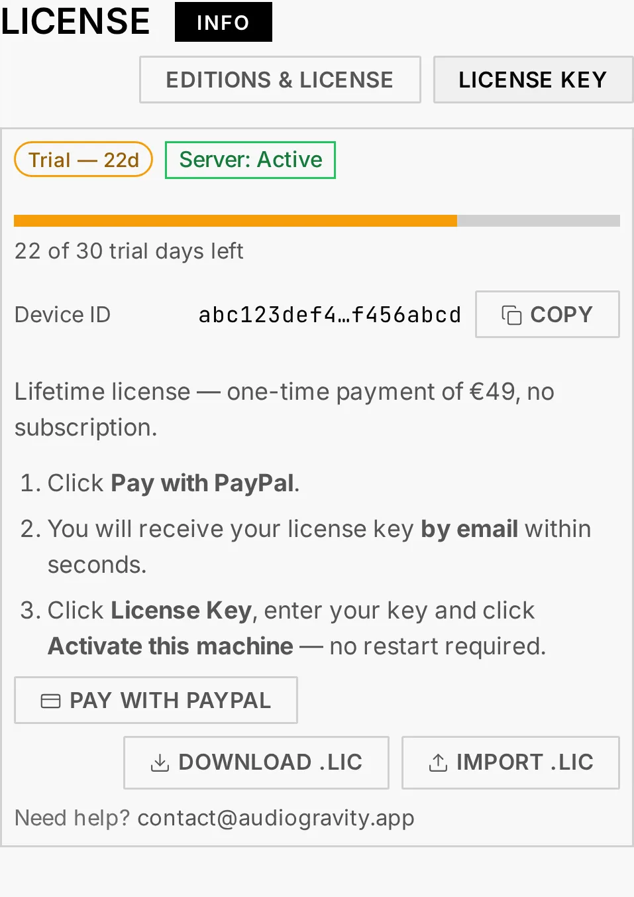

7. Administration
Everything you need to run the box lives in the interface — no SSH required. Most of this section is available on Starter: Profiles, Services, Audio Software, System, Admin — and Config, the configuration editor and its guided setup. Four tabs are Pro: Systemd tuning, Performance tuning, the Audio Pipeline map and the Library. Every tab has an INFO badge that opens an in-app explanation.
The Admin tab
The Admin tab gathers everything about accounts and the box's relationship with Audiogravity: the user cards (below), unread announcements, the update banner — and the licence panel, which also opens when a Starter install taps a locked Pro tab.
Users & access
User management lives on the Admin tab — one card per account, with an online indicator for users currently connected. Three roles control who can do what:
- Admin — full access to all features and user management. Cannot be deleted or demoted by others, and cannot delete their own account.
- User — standard access to features, but cannot manage users or core settings.
- Guest — read-only: can view status and logs but not change settings or toggle services.

Passkeys — the Passkeys button on your own card registers WebAuthn credentials (Face ID, Touch ID, a hardware key). Each passkey is tied to one device and can be removed individually; use it instead of a password at login. Password changes take effect immediately on current sessions.
Session persistence — the Persist toggle chooses how your session is stored: persistent (stay logged in across browser restarts) or session-only (log out when the tab closes). Takes effect on your next login.
The Settings panel
The gear in the top bar opens the app-wide Settings panel:
- Export / Import Configuration — download or replace
audio-config.json, the services-and-profiles registry (see Audio configuration below). - Theme — three looks: Minimal (Classic), Slate (Modern) and Gravity (Bold & Cosmic) — plus a Light/Dark Mode toggle.
- Notifications — subscribe this device to push notifications (see below).
- Compact Mode — a denser layout. Animations — turns UI motion off (functional loading spinners keep animating so an operation never looks stuck).
- Portrait Lock — phones and tablets only; see 4. Listening.
- Face ID / Touch ID — register this device as a passkey in one tap; each registered device appears as a chip you can remove individually. (These are the same credentials as the Passkeys button on your user card above.)

Push notifications
With Notifications on, the box sends this device a system notification when something needs attention — even with the app closed:
- a monitored service goes down;
- the CPU reaches a critical temperature;
- a software package update is available;
- a profile is activated.
Like passkeys, push needs Audiogravity reachable over a real HTTPS domain — it does not work over a bare IP (see 2. Installation).
Services
Monitor and control individual systemd services in real time.
- Status — active (green), inactive (grey) or failed (red); the dot blinks orange while a start/stop is pending. A segmented health bar shows the running / stopped / failed proportions at a glance.
- Control — start, stop or restart any service from its tile. The ENABLED / DISABLED badge controls whether it starts at boot. Uptime is shown next to the unit name.
- Detail — click a service name for live metrics (CPU, memory, tasks, network, disk) and the session action history. Metrics are colour-coded LOW / MEDIUM / HIGH, tuned per audio service (e.g. CPU: ≤5 % low, 5–20 % medium, >20 % high).
- Filter — ALL / RUNNING / STOPPED / FAILED.
A dash means "not measured", not "zero". Three of the figures depend on counters that can be switched off, and Audiogravity shows a dash rather than inventing a value:
- Disk and Network are counted per service, and only when IO Accounting and IP Accounting are enabled on that service — two switches in the Systemd tab's override editor. They take effect at once, without a reboot.
- Memory depends on the machine: a Raspberry Pi kernel starts with its memory counter switched off, and no setting in the app can change that. See 9. Troubleshooting → Memory reads 0 for every service.
CPU and tasks are always measured.

Config editor
Safely edit the real configuration files of your audio services (see also 3. First run for the guided setup).
- Guided mode (MPD / AirPlay / UPnP) — change output or library in a couple of clicks; only the changed setting is rewritten. Reset to default regenerates a minimal config (current file backed up first).
- Form mode — edit common settings through a friendly interface with field descriptions and validation.
- Expert (Raw) mode — edit the raw file directly, with syntax validation before save.
- Preview changes (Diff) — a unified diff (raw) or a before/after field table (form) of your unsaved edits.
- Automatic backups — every save creates a timestamped backup; the Backups button browses and restores any previous version.
- Restart after save — on by default (applies changes immediately); uncheck to batch several edits.
Each tile carries the state of its service — RUNNING, STOPPED or FAILED — and, for the services Audiogravity can set up itself, whether it is CONFIGURED or still on the package defaults.
When the software behind a tile is not installed
A tile whose package is absent is dashed and greyed, carries an UNAVAILABLE badge and says so in plain words, with a link to Audio Software where the package is installed. Without that, the tile showed the path of a file that does not exist and a button offering to edit it, and looked broken rather than empty.
What can still be done, still can: a package removed without purging leaves its configuration file behind, and that file stays downloadable — a file on the box can always be taken off it. What cannot, is refused: editing is closed, because saving a configuration also restarts the service, and no restart can succeed for software that is not there. Backups are not lost either; they come back with the package.
The reverse case is left alone: an installed service whose file is missing keeps its editor, which is what creates the file.
Audio configuration (services & profiles)
audio-config.json is the registry of the audio services Audiogravity manages and
the profiles built on top of them. It's what populates the Services tab (each declared
service becomes a controllable tile) and the Profiles tab (each profile a one-tap way to
start one set of services and stop another). It is a different file from the per-service config
files edited above — this one lists which services exist, not their internal settings.
-
Services — each entry declares a
label, itssystemd_unit(e.g.mpd.service) and acriticalflag. MPD, upmpdcli (UPnP), shairport-sync (AirPlay), Roon Bridge and HQPlayer's NAA are the usual entries. Where a service keeps its own settings file is not declared here — Audiogravity finds it by itself, on any machine. Files written before this version carry anappconfigfileline; it is ignored (see 9. Troubleshooting). -
Profiles — each entry has a
name, adescription, and two lists: the services to start and the services to stop when you activate it (plus an optionalcriticalflag anddepends_on). "MPD", "Stop All"… are profiles. -
topology_link— ties this box to its device in the topology (host_device_id, e.g.streamer_01), so the signal-chain view knows which streamer the services run on. -
Managing it. Open Settings (the gear in the top bar). Export Configuration downloads the current
audio-config.json; Import Configuration uploads a replacement. -
Validation on import. An imported file is checked before it is applied: bad structure, a missing required field, a wrong type — but also a
systemd_unitthat isn't installed on the box — are reported as blocking errors; softer issues appear as warnings you can review and accept. A referenceaudio-config.json.exampleships with the box.
See also Audio topology below — the other file you own, describing the physical hi-fi chain that feeds the signal-path view.
Audio topology (signal-chain map)
The Audio Pipeline graph (see 6. Outputs & engines) is drawn
from a single file you own: audio-topology.json. It is a plain description of your
hi-fi chain — which devices you have (streamer, DAC, amplifier, speakers, the app driving
it…) and how they are wired together. Audiogravity reads it to draw the picture;
it never rewrites it, so the map always reflects exactly what you declared.
- What it declares vs. what is detected. The topology describes the chain — the boxes downstream of your streamer and how they connect. The streamer's own physical outputs (USB, optical, HDMI…) are resolved live from the real hardware at playback time, not from the file; the file just tells Audiogravity which cable feeds which device so the graph and the output labels line up.
- Editing it. Open the Audio Pipeline view and click CONFIG (Pro, admin/user — guests get a read-only view). The editor opens in View mode; hit Edit to unlock the JSON, then Save.
- Download / Upload. From the same editor, Download saves the current
audio-topology.jsonto your computer — handy for editing it offline or keeping a copy; Upload loads a file back into the editor for review, and the usual save-time validation runs when you click Save (nothing is written until you do). - Validation on save. Before the file is written, Audiogravity checks it: a malformed file or an unknown device type is an error and blocks the save; a broken link (an output pointing at a device that doesn't exist) or a connector that maps to no real output is a warning you can review and accept. Once saved, the graph reloads immediately.
Structure
Everything lives under hifi_topology.devices — a map keyed by a device id you choose:
{
"hifi_topology": {
"devices": {
"streamer_01": {
"type": "streamer",
"label": "Audiogravity",
"outputs": {
"usb_out": { "connector": "usb-a", "target_device_id": "dac_01" }
}
},
"dac_01": {
"type": "converter",
"label": "My DAC",
"inputs": { "usb_in": { "connector": "usb-b" } },
"outputs": { "line_out": { "connector": "rca", "target_device_id": "amp_01" } }
}
}
}
}
type— one ofstreamer,converter(DAC),amplifier,output(speakers),source,server,storage,controller.outputs/network_outputs— each wired output points at atarget_device_id(and optionally atarget_input_idon that device); that's what links the chain together.connector— on the streamer, the output connector (usb-a,toslink,hdmi,rca/jack…) is what maps the declared output onto a detected hardware output. A connector that matches no real output is what the save-time check warns about.
A fully-commented reference file, audio-topology.json.example, ships with the box and
validates cleanly — start from it when in doubt (Download the current file, edit against the
example, then Upload it back).
Keeping it up to date
Edit the map whenever your physical setup changes — a new DAC, a different amplifier, a cable
moved from optical to USB. Keep the target_device_id values consistent (an output should
point at a device id that exists), and the save-time validation will flag typos before they
reach the graph. Every save is backed up automatically, so you can always roll back.
Audio Software
Install, update and uninstall the services Audiogravity uses (MPD, upmpdcli, shairport-sync, Roon Bridge…).
- States — NOT INSTALLED, INSTALLED, INSTALLING/UPDATING (progress bar), ERROR.
- Actions — INSTALL, UPDATE (to the version its publisher offers), UNINSTALL. After a failed operation the card offers the way out that fits it: an install that failed left nothing behind, so it offers to try again; an update that failed left the previous version in place, so it offers to update or to remove.
- Version check — your box checks by itself, once a day, and tells you when something new is published; you do not have to come and ask. CHECK UPDATES in the header asks immediately, and first refreshes what your system knows its software sources publish — which is what makes the answer current rather than as old as the last boot. When updates are pending, an UPDATE ALL badge appears next to it to run them in one go.
- Roon is the exception — Roon publishes no version number anywhere: its download always carries the same name and holds no version inside. Your box therefore cannot announce a Roon update, and does not pretend to — waiting for one is waiting for something that cannot come. The button stays available all the same: using it re-runs Roon's own installer, which always fetches the current build. The card tells you which build you have and that there is nothing to compare it against.
- Not available here — a greyed-out INSTALL always says why, and the three reasons are not the same: the publisher has no build for your machine's architecture (nothing to be done); their site could not be reached when the list was worked out (worth trying again — the refresh icon in the page header rebuilds it); or another installed package rules it out. Roon is the case you are most likely to meet: Roon Server already contains Roon Bridge, so the two cannot share a box, and the card names the one that is in the way.
- Installed, but not configured — installing a service does not configure it; that is a separate, deliberate step. The card says so while a service still runs on the settings its own package shipped, because it can then play to the wrong output while looking perfectly ready.
- Playback is interrupted — updating a service restarts it, uninstalling stops it. The confirmation names the service that is about to be cut, so an update chosen in the middle of an album is a decision rather than a surprise.
- Restart required — a pulsing badge appears when a service needs a restart after install/update; click to restart it.
- Architecture — the CPU badge shows supported architectures (amd64, arm64…). A DRY-RUN mode simulates operations safely.
System
Real-time monitoring and box-level actions.
- Metrics — CPU, temperature, memory, disk and network, updated every few seconds over SSE (the LIVE badge shows the stream is active).
- System & audio hardware — hostname, OS, kernel, CPU model/cores; every audio card, USB interface and subdevice.
- Event log — system events and live updates; RUNNING/STOPPED to pause, CLEAR to reset.
- Actions (admin) — Restart Backend restarts the Audiogravity service without rebooting; Reboot OS performs a full reboot (double confirmation). The UI reconnects automatically. Support Report is described below.
- Terminal (admin) — a full interactive bash shell in the browser (runs as the backend user — use with care).
Support report
Support Report in System › Actions collects, in one gesture, everything someone helping you would otherwise have to ask for: the version and architecture, the licence verdict, system vitals, which audio packages are installed and at which versions, the state of each service and whether it starts at boot, the detected outputs and the one each service is pinned to, whether each configuration file is Audiogravity-managed or hand-written, the declared music library and whether MPD has actually indexed it — and the configuration files themselves.
Passwords, API keys and access tokens are removed before the report is built. A credential's name stays visible so you can still see the setting exists, but its value never appears. Neither does the content of your library.
Nothing is sent anywhere. The report is displayed for you to read; Copy puts it on your clipboard and Download saves it as a text file, so it travels only if you attach it to a message yourself.


Performance tuning (Pro)
Tune CPU scheduling for bit-perfect, glitch-free playback.
- CPU governor — performance (max frequency always, lowest latency), schedutil (adapts to load), powersave (not recommended for audio). Apply All sets it on every core; Save Conf persists it; Create Service restores it at boot.
- THROTTLED badge — appears on a core when the kernel reports thermal throttling; sustained throttling during playback causes glitches.
- Latency test — runs
cyclictestto measure real-time scheduling latency (µs); lower max = fewer dropouts. History of the last 10 runs. - Network test — ping jitter/loss or iperf3 throughput; useful for Roon, AirPlay or NAS playback.
- RT process monitor — shows the scheduling policy of audio processes: SCHED_FIFO / SCHED_RR = real-time (green); NON-RT = risk of glitches under load (red).
Systemd tuning (Pro)
Low-level, per-service OS tuning using systemd drop-in overrides — the native
.service files are never modified; everything lives in an isolated
.d/override.conf.
- CPU affinity — pin a service to specific cores to cut context-switching jitter.
- RT scheduling — FIFO/RR policy and priority (1–99) for guaranteed CPU time.
- CPU weight / I/O priority / OOM score — bias the scheduler, disk/network I/O and the out-of-memory killer in favour of audio.
- RT preset — Audio Optimized pre-fills a battle-tested config (SCHED_FIFO 80, LimitRTPRIO 99, MEMLOCK infinity, I/O realtime, OOMScoreAdjust −500, CPUWeight 1000).
- Safety — a diff preview before applying, automatic backups (Restore Backup), and Remove Override to roll a service back to factory behaviour instantly.
Announcements
From time to time Audiogravity broadcasts a short announcement — release news, an important notice. Unread announcements appear as dismissible banners at the top of the Admin page, and the Admin tab carries a small marker until you have seen them (the same cue it uses for a waiting update). Dismissals are remembered per device.
Licence
The licence panel opens from the Admin tab (and automatically when a Starter install taps a Pro tab — those carry a small lock icon in the tab bar).
- Trial — 30 days of full access, auto-activated on first run.
- Lifetime — a single-device
.licfile cryptographically tied to this device's hardware fingerprint (the Device ID). One-time payment, no expiry, no subscription. - Time-limited — the same file, issued to run until a given date. The panel shows that date while the licence is valid, and the plan reads Time-limited rather than Perpetual. Every Pro feature is unlocked exactly as with a lifetime licence.
- Import / re-download — import a
.licfile, or re-download yours from the self-service portal (purchase email + Device ID, no account needed) after an OS reinstall.

What the box sends to the licence server
Whether Pro is unlocked is decided on the box, from the signature of its .lic file —
no network round-trip gates it. Alongside that, the box checks in with the licence
server once a day; that channel is how revocations,
announcements and update offers reach you.
The check-in carries what the licence needs and nothing more: the Device ID, the
primary MAC address, the operating system and architecture, the
Audiogravity version, the current licence status and — during the trial —
its start date. The .lic file itself travels when it is verified, and the hostname
you type when activating a key. The server records the network address the request
arrives from. Your music, your library paths, your service credentials and what you
listen to never leave the box.
A Pro licence is tied to one machine, so this exchange is part of how the licence works and is not optional.
Related
- 8. Updating — keeping the box current
- 9. Troubleshooting — when something misbehaves
Roon, HQPlayer, AirPlay, Qobuz, Tidal and HIGHRESAUDIO, and their respective logos, are trademarks of their respective owners. Audiogravity is not affiliated with, endorsed by, or sponsored by any of them: it interoperates with their software as a client, and each remains the property of its owner.